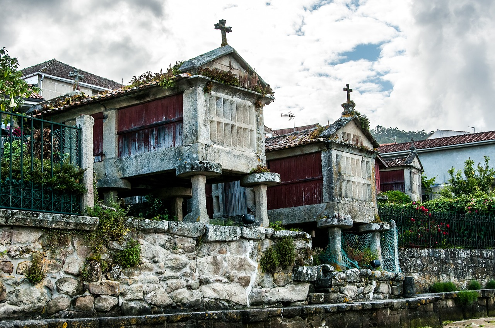
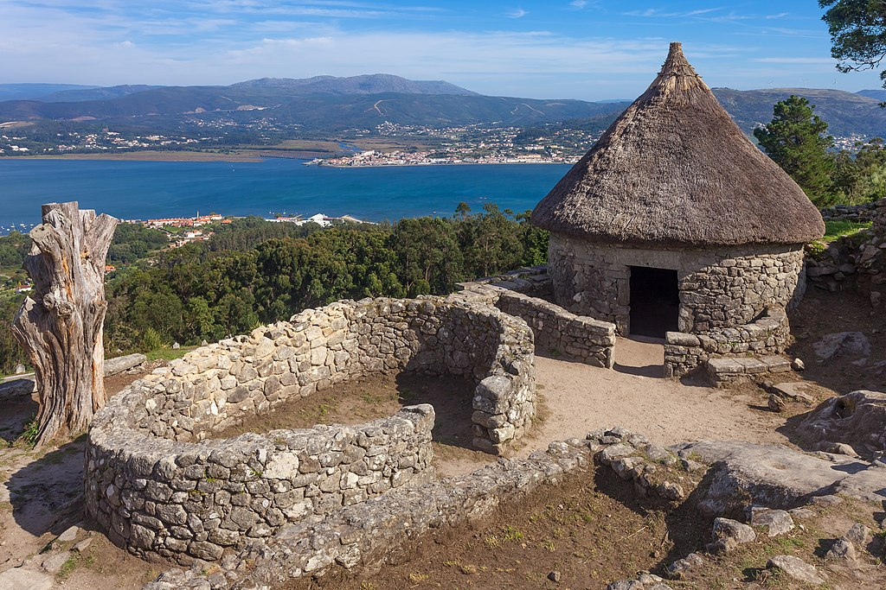
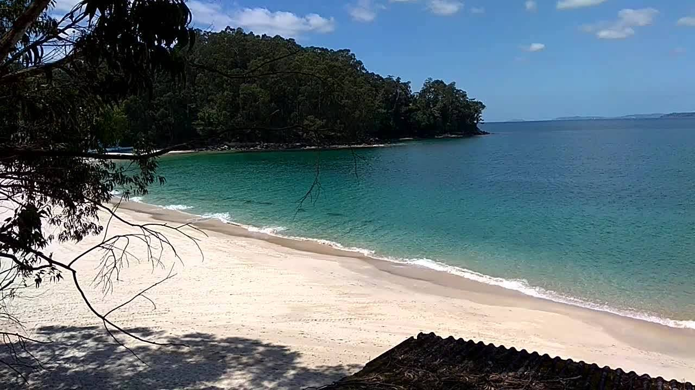
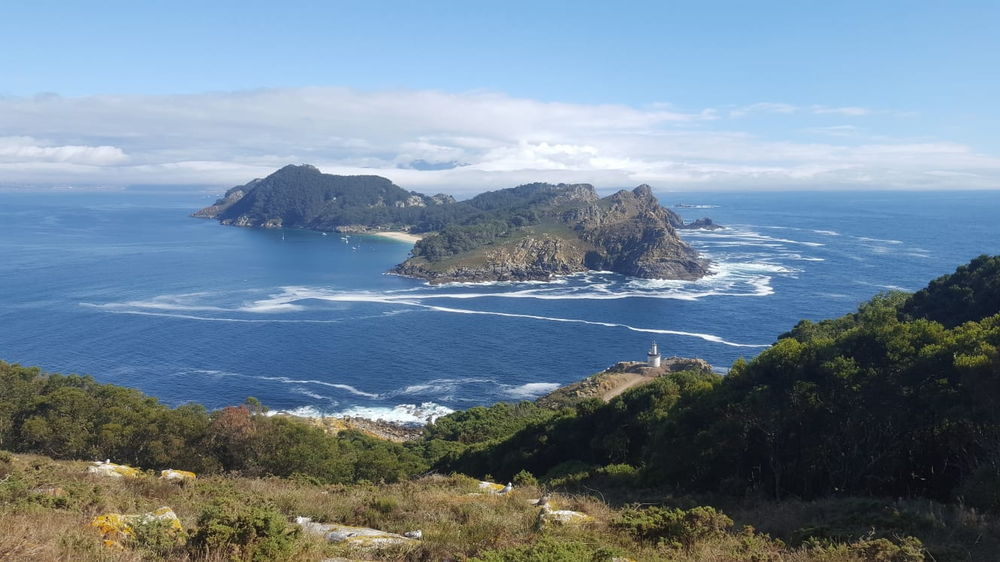
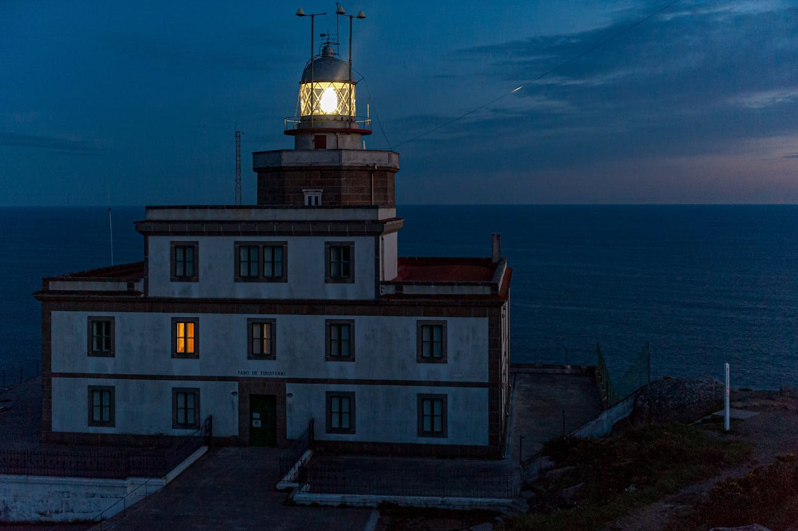
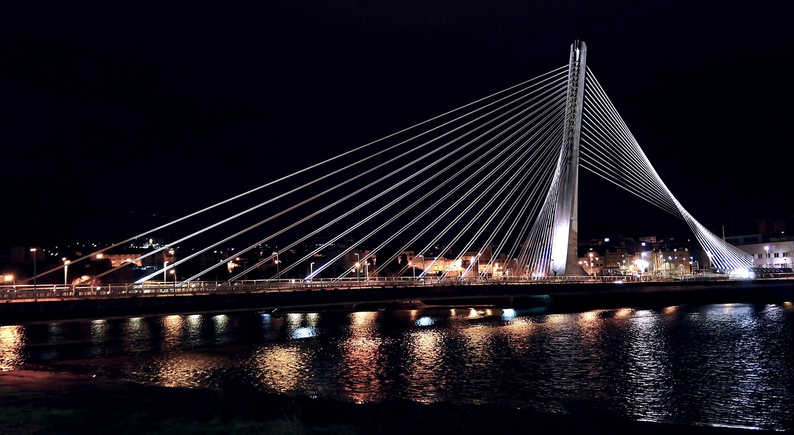
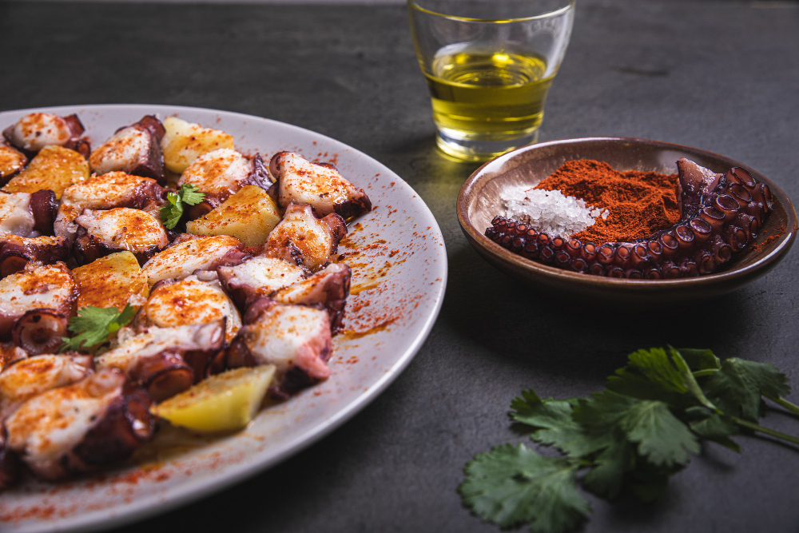
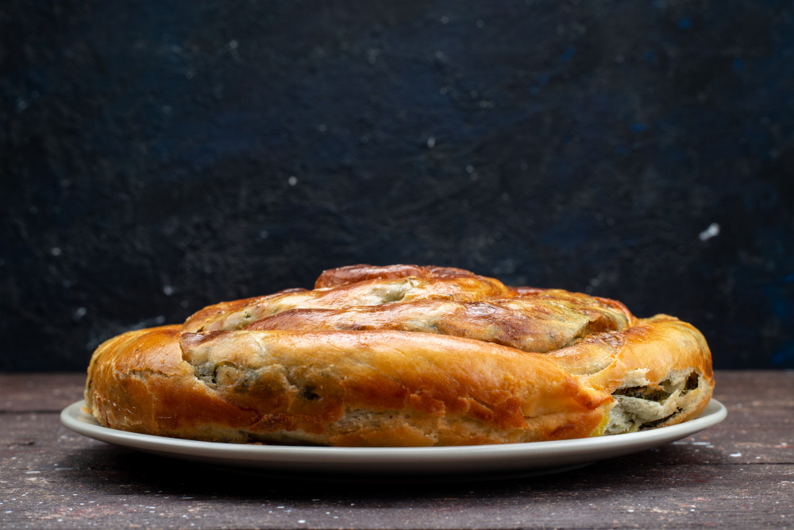
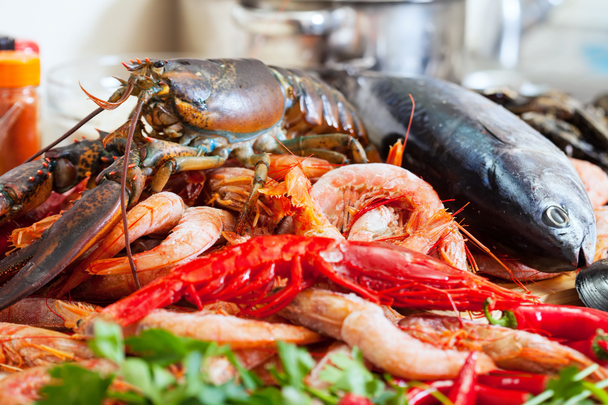
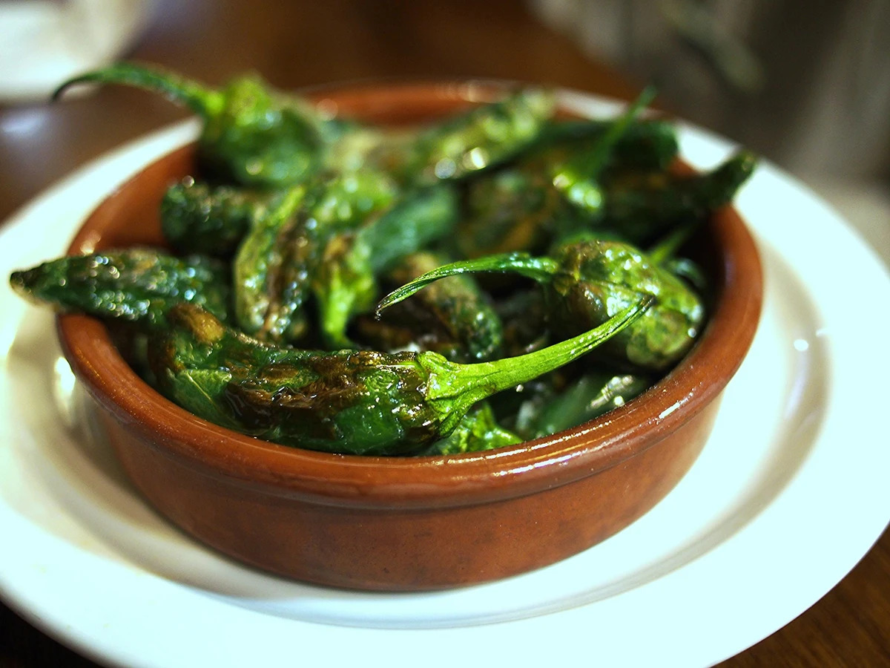

Portada
Categoría
Presentación
Enlaces
Lugares para visitar

Combarro

Castro de Santa Tecla

Playas de Marín

Islas Cíes

Finisterre

Pontevedra
Conoce nuestra gastronomía

Pulpo a Feira

Empanada
Churrasco

Marisco

Pimientos de Padrón
Tarta de Santiago